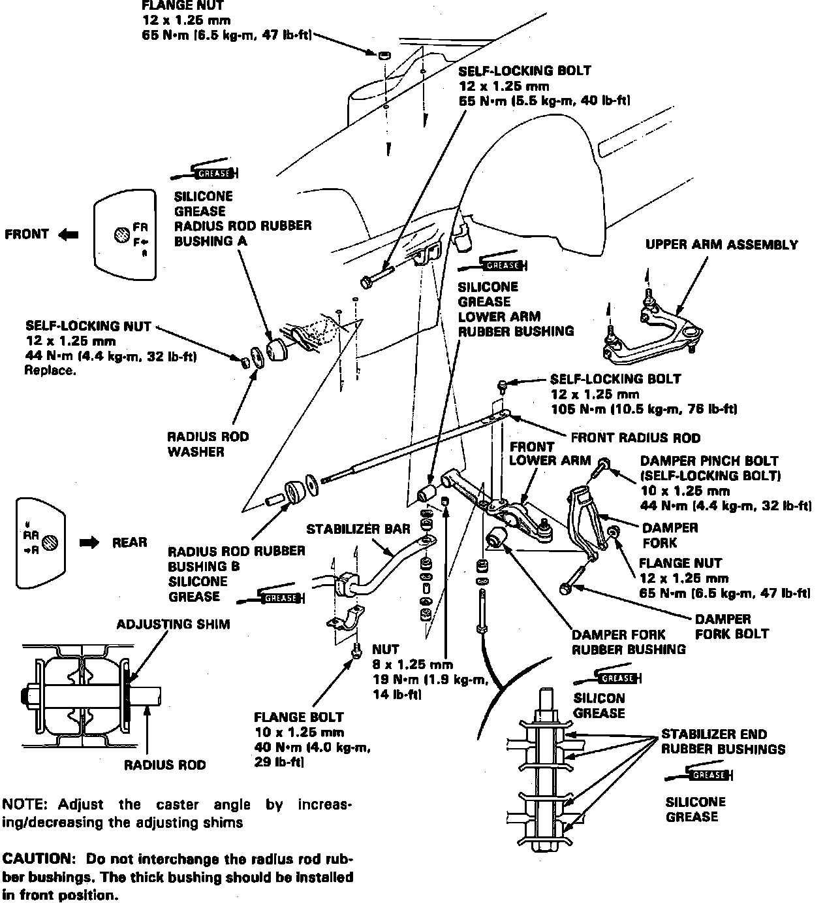

Operation CHARM
: Car repair manuals for everyone.
Home
>>
Acura
>>
1992
>>
Vigor L5-2451cc 2.5L SOHC G25A4 FI
>>
Repair and Diagnosis
>>
Steering and Suspension
>>
Suspension
>>
Radius Arm
>>
Service and Repair
Radius Arm: Service and Repair
Fig. 11 Exploded View Of Front Suspension Components:
